Note
Hello, welcome to the SunFounder Raspberry Pi & Arduino & ESP32 Enthusiasts Community on Facebook! Dive deeper into Raspberry Pi, Arduino, and ESP32 with fellow enthusiasts.
Why Join?
Expert Support: Solve post-sale issues and technical challenges with help from our community and team.
Learn & Share: Exchange tips and tutorials to enhance your skills.
Exclusive Previews: Get early access to new product announcements and sneak peeks.
Special Discounts: Enjoy exclusive discounts on our newest products.
Festive Promotions and Giveaways: Take part in giveaways and holiday promotions.
👉 Ready to explore and create with us? Click [here] and join today!
Lesson 13: Complete Mars Rover Control
You’ve mastered all the pieces - now let’s put them together! Combine everything you’ve learned to create your fully functional Mars Rover with live camera view, movement controls, and camera tilt.
Bring together three amazing systems:
Exploring Your Rover’s Camera System: See through your rover’s eyes with live video
GalaxyRVR Signal Lights in Action: Drive around with colorful signal lights
Touch Control for Camera Angle: Look up and down with camera controls
The result? Complete control of your GalaxyRVR! Click buttons for camera controls and use arrow keys to drive.
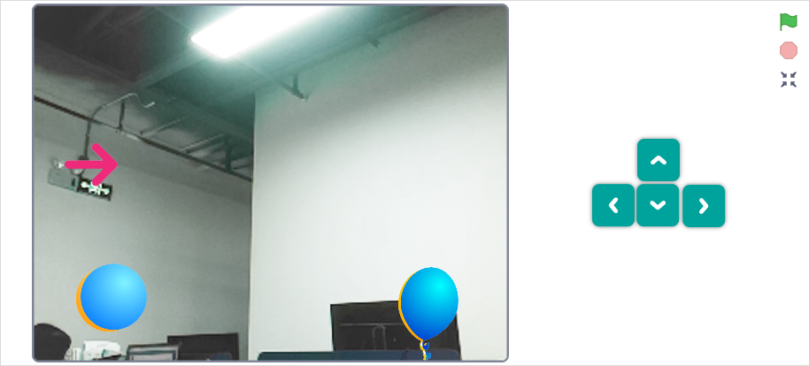
Camera System
Repeat the camera setup from your previous lesson: Exploring Your Rover’s Camera System.
Create four control sprites and arrange them neatly.
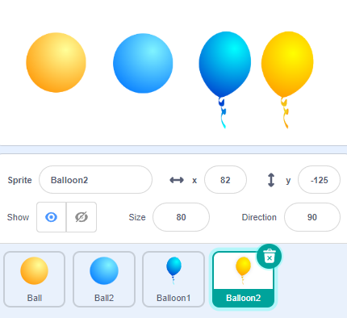
Program each button’s function:
Ball 1: Camera OFF
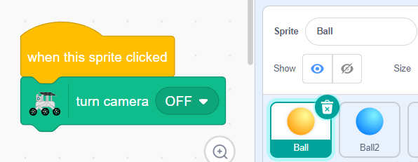
Ball 2: Camera ON with correct orientation
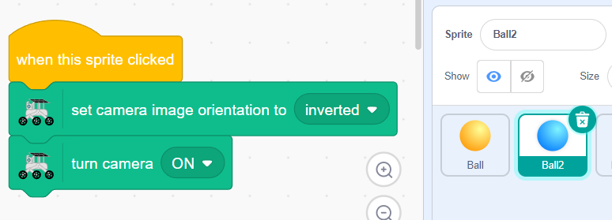
Balloon 1: LED light ON
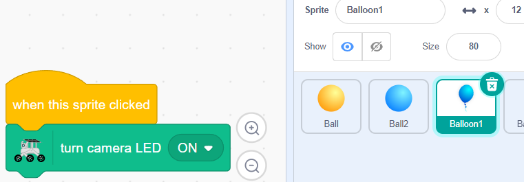
Balloon 2: LED light OFF
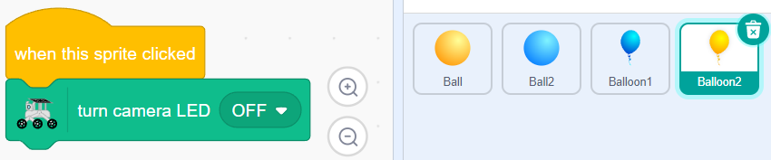
Stack the controls to save space - they’ll unfold when you need them!
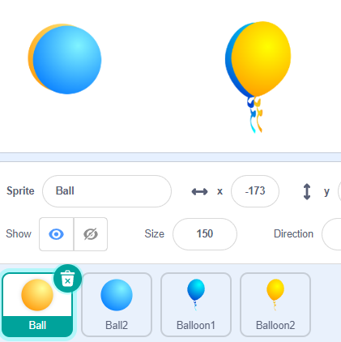
Add
go to back layerto create a cool toggle effect between buttons.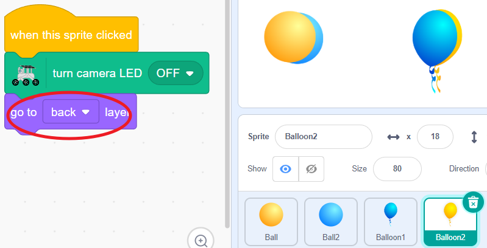
Movement & Lighting System
Let’s add colorful lights to your rover’s movements! We have already coded these in the GalaxyRVR Signal Lights in Action section.
We recommend placing this code in the Backdrops section - this keeps it separate from your sprite code and makes everything more organized.
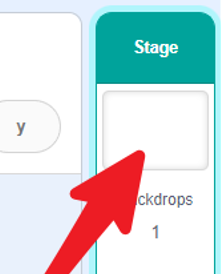
Make your rover glow GREEN when moving forward.
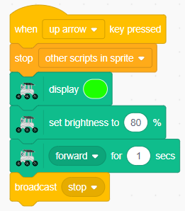
Make your rover glow RED when moving backward.
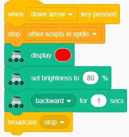
Make your rover glow YELLOW when turning left or right.
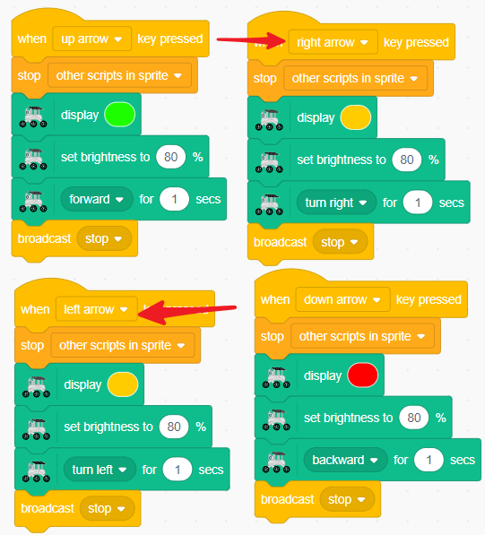
Create a breathing blue light effect when your rover is stopped.
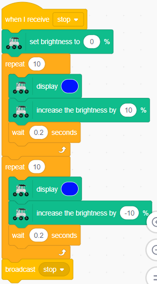
Your complete backdrop code should look like this:
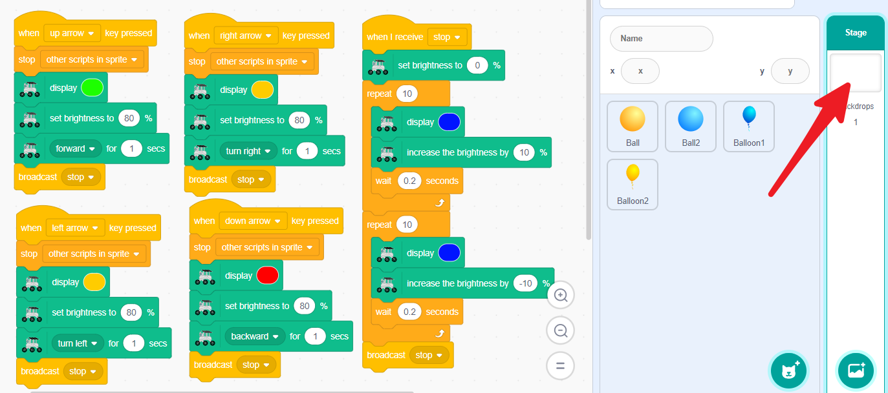
Camera Tilt Control
Let’s add camera controls! This part is the same as the Touch Control for Camera Angle. Simply repeat the steps.
Add an Arrow sprite to control your camera’s tilt.

Start with a
when this sprite clickedblock.
Create a loop that runs while you’re touching the arrow.

Make the arrow point toward your finger as you drag.

Connect the arrow’s direction to the camera angle - rotate the arrow to move the camera!

Set limits to keep the camera between 0-135 degrees.


Touch and drag the arrow to aim your rover’s camera! Make the arrow bigger if it’s hard to control.
Complete Control of Your GalaxyRVR
Now you have full control of your Mars Rover! Here’s how to operate your complete GalaxyRVR:
Control Your Rover:
Use the arrow keys to drive forward, backward, and turn
Click the Ball sprites to turn the live camera video on and off
Click the Balloon sprites to control the camera LED light on and off
Drag the arrow sprite to tilt the camera up and down
Test All Features Together:
Drive around while watching the live camera feed from your rover
Notice the colored lights that signal each movement
Practice tilting the camera to look at objects from different angles
Try exploring in both bright and dark conditions using the LED light
Congratulations! You have successfully combined all the systems to create a fully functional Mars Rover. You’ve learned how to program movement, lighting, camera controls, and tilt mechanisms - all the skills needed to operate a real exploration robot.
Your Mars mission is now ready to begin. Happy exploring!